TECHVESTVENTURES DAILY RISK ALERTS — Emergent News Digest — Nov 27, 2026, 12:00 PM EST ALL RISK REPORTS click TVV Risk Center
TVV RESEARCH DIGEST — November 27, 2026 — 13 desks
Prioritized Risk Summary November 27, 2026
| Sections Ranked for Importance Today | |
|---|---|
| GEOPOLITICS | Kuwait drone deaths draw Europe in; Trump adds a carrier and names an Iran target |
| TERROR | AI agents breach Swiss infrastructure operators; SAP source code hacked |
| PREDICTIONS | Bettors price 94.5% for a Dec 9 Fed hike and 18% for an AI bubble burst by year-end |
| DERIVATIVES | Burry flags AI data-center debt as mispriced; bettors see CoreWeave default at 38% |
| TECHNOLOGY | Nvidia Blackwell rack found at Shanghai site tied to Alice Huang |
| HEALTH | Congo's Ebola deaths may be far higher than reported; funerals restricted |
| ECONOMY | ECB, Japan and India lean toward hikes; US 10-year yield back near 4.9% |
| AI BOOST | SAP weighs 10,000 more AI job cuts; Claude cracks black hole puzzles |
| STOCKS | Green Friday rally lifts Nasdaq 1.7%, but November is the worst since 2008 |
| COMMODITY | Silver jumps 7.8% and gold 2.4%; OPEC+ set to hold output steady |
| INFRASTRUCT | Over 128,000 in New Jersey still without power after the nor'easter |
| SPACE | Kp peaks below storm level; Thanksgiving auroras stay mostly in Canada |
| QUAKES | No new damaging M6+ quake; this week's M6.5 Vanuatu caused no reported harm |
1. Major Geopolitical Conflict Developments
- ★ Kuwait drone deaths widen the Iran war: Kuwait summoned Iran's ambassador Friday and said Tehran bears full responsibility for Thursday's drone attack that killed two Italian Rheinmetall technicians, citing its right to self-defense under Article 51 of the UN Charter. Iran's foreign minister Abbas Araghchi denies any role and offers a joint investigation, and Iran's embassy in Rome raised a "false flag" theory; these are conflicting claims. European Commission President Ursula von der Leyen called for more pressure on Tehran, and Saudi Arabia, Bahrain, Qatar, the UAE and Jordan condemned the strike (Iran International, CBS News). Iran International · CBS News
- ★ Trump adds a carrier and names a target: President Trump said the US sent an extra aircraft carrier to the region, said Iran is making "big mistakes" and that the war will end "whenever I want it to be," and said the US would strike Pickaxe Mountain, an underground site near Natanz never inspected by the IAEA, if fighting resumes (Iran International, CNBC, The Hill). Araghchi says Qatari and Pakistani mediators are still passing proposals but Iran's conditions for reopening the strait are unchanged. The Arab Weekly reports Israel is divided over striking Iran without US backing. Iran International · CNBC · The Hill · The Arab Weekly
- ★ Blockade tightens, claims collide: a US advisory adds curbs on ship-to-ship oil transfers at sea (EnergyNow), while Seatrade Maritime reports an OFAC-sanctioned tanker crossed the blockade and Iraqi outlet Shafaq News carries an Iranian claim that commandos retook two tankers from US forces. The tanker claims are not independently confirmed and are labeled as conflicting wartime claims. Iranian hardliners are calling for a tanker convoy to defy the blockade (OilPrice). EnergyNow · Seatrade Maritime News · Shafaq News · OilPrice
- ★ Taiwan votes Saturday under Chinese pressure: campaigns for Taiwan's Nov 28 local elections ended Friday as China sent warplanes near the island (Reuters), about 30 aircraft by one count (Modern Diplomacy), and the PLA tested new Taiwan landing tactics in coastal drills (Reuters). Taipei mayoral candidate Puma Shen is sanctioned by Beijing (AP, New York Times). Near term, Polymarket bettors give the China-friendlier KMT 74% to win the most races and Taipei's incumbent 62% (see graph). Reuters · Reuters · Modern Diplomacy · AP News · The New York Times · Polymarket
- ★ Russia and NATO: a Russian diplomat warns nuclear war is "inching closer" with NATO (Newsweek). President Trump says he urged Putin to "pull back" aggression in Europe while the US delays its troop posture review (RFE/RL, DW). Latvia and Estonia issued drone warnings amid reported attacks inside Russia (Anadolu), and data show Kyiv launched more long-range strikes in 2026 than in the rest of the war combined (The Guardian). Newsweek · RFE/RL · DW · Anadolu · The Guardian
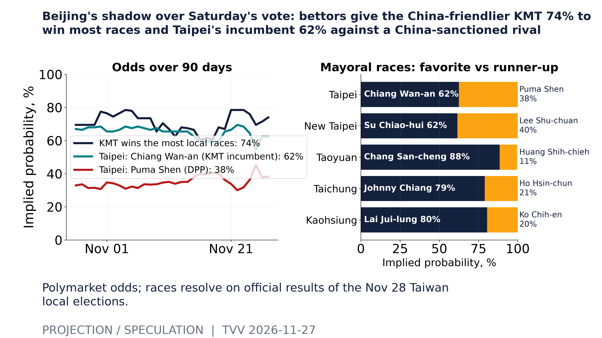
Beijing's shadow over Saturday's vote: bettors give the China-friendlier KMT 74% to win most races and Taipei's incumbent 62% against a China-sanctioned rival. Polymarket odds; races resolve on official results of the Nov 28 Taiwan local elections. [Projection/Speculation; data as of 2026-11-27 10:36 ET] Source: polymarket.com data page
2. Major Terror / Security Incidents
- ★ Niger attack: Niger launched a manhunt for gunmen behind a deadly attack on its national guards (TRT Afrika). In Israel, the IDF says three Palestinians were arrested in the West Bank for planning an imminent terror attack (Times of Israel), and Shin Bet and police arrested a suspect planning an attack in the Ramat Hasharon area (Jerusalem Post). TRT Afrika · The Times of Israel · The Jerusalem Post
- ★ AI agents breach Swiss infrastructure: Switzerland's National Cyber Security Centre confirmed its first cyberattacks carried out with AI agents, five cases in recent days; three targeted critical-infrastructure operators and two of those succeeded, with four of five attacks compromising systems. SRF says the targets included electricity, water and telecom providers; there were no major outages and the attackers are unknown. The NCSC says internet-reachable attack agents such as ARTEX and CyberStrikeAI have almost doubled since October and urges patching internet-facing systems within 24 hours (NCSC, Swissinfo, Reuters via The Hindu). NCSC Switzerland · Swissinfo · The Hindu
- ★ SAP source code breach: SAP confirmed a security incident after suspicious activity in its GitHub environment; insiders told Der Spiegel attackers used stolen employee tokens to copy and alter source code, possibly with AI help. SAP restricted GitHub access, paused automated development pipelines and replaced signing keys under an internal response called "Project Granite," and says it has found no evidence of access to customer business data. No report says tampered code reached customers (SecurityWeek, The Record, BleepingComputer). SecurityWeek · The Record · BleepingComputer
- ★ More cyber hits: global news agency AFP reported a cyberattack and shut down a content platform (Al Jazeera); a USDA cyberattack knocked out farm loan systems for a week (Farm Progress); and Booba ransomware spread from a US water treatment plant into a local government network, exposing IT/OT links (Industrial Cyber). Retail is in the crosshairs on Black Friday: 103 retail ransomware victims have been posted in November so far, on pace for 114 versus 58 last November (see graph), a projection from the month-to-date pace. Al Jazeera · Farm Progress · Industrial Cyber
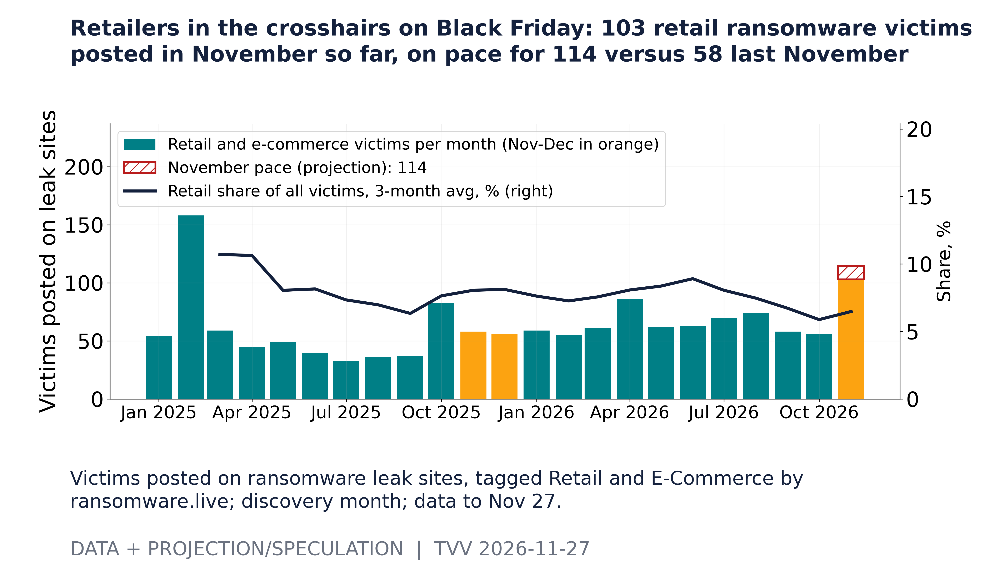
Retailers in the crosshairs on Black Friday: 103 retail ransomware victims posted in November so far, on pace for 114 versus 58 last November. Victims posted on ransomware leak sites, tagged Retail and E-Commerce by ransomware.live; discovery month; data to Nov 27. [Data + Projection/Speculation; data as of 2026-11-27] Source: ransomware.live data page
3. Earthquakes and Eruptions
- ★ No new damaging M6+ quake: USGS shows no M6.0+ earthquake with significant casualties or damage since the M6.7 in central Peru on Nov 21 (UTC); this week's M6.5 Vanuatu and M6.4 Mauritius-Reunion events carried green alerts. Research reported by Phys.org shows internet fiber cables can double as seismic sensors to map faults in fine detail. Near term, Polymarket bettors put 73% on the week of Nov 23-29 ending with exactly one M6.5+ quake, while history says 48% of weeks have none (see graph). USGS · Phys.org · Polymarket
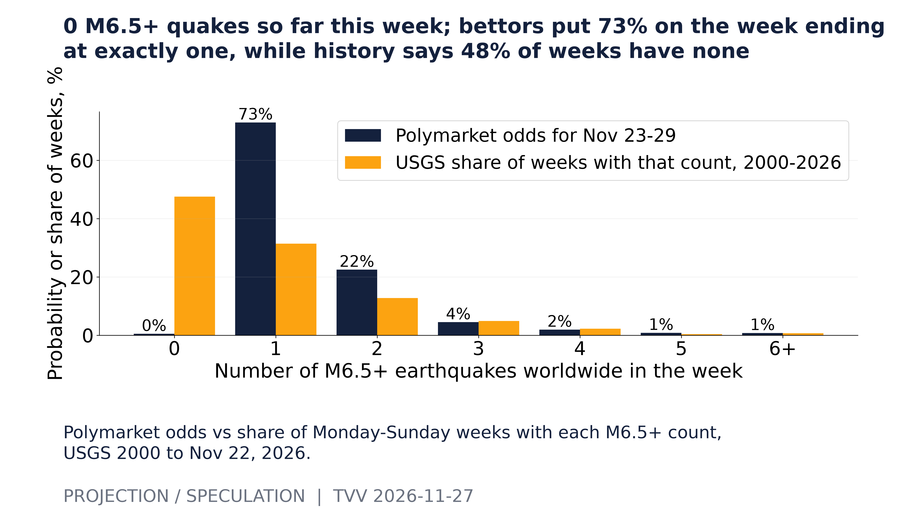
0 M6.5+ quakes so far this week; bettors put 73% on the week ending at exactly one, while history says 48% of weeks have none. Polymarket odds vs share of Monday-Sunday weeks with each M6.5+ count, USGS 2000 to Nov 22, 2026. [Projection/Speculation; data as of 2026-11-27 10:36 ET] Source: polymarket.com data page
4. Solar / Space Weather
- ★ Thanksgiving aurora hype versus data: NOAA's OVATION model put aurora odds at no more than 7% over the lower 48 Friday morning, with Kp forecast to peak at 4.67, just below G1 storm level, so the lights stayed mostly in Canada and Alaska (NOAA SWPC, see graph). Some outlets forecast a two-day magnetic storm for Nov 27-28 (UA.NEWS); NOAA's last watch, issued Nov 25, was G1 only. SpaceWeatherLive reports twin coronal holes facing Earth. NOAA SWPC · UA.NEWS · SpaceWeatherLive
- ★ Long-horizon warning: Antarctic researchers report new findings on how space weather disrupts satellites and power grids (The Brighter Side of News). A weakening magnetic field and pole drift remain measured warnings; no one can predict the timing of a sudden geomagnetic shift. Michael Hentschel's own view: 2035 at the earliest, with critical earth changes along the way. The Brighter Side of News
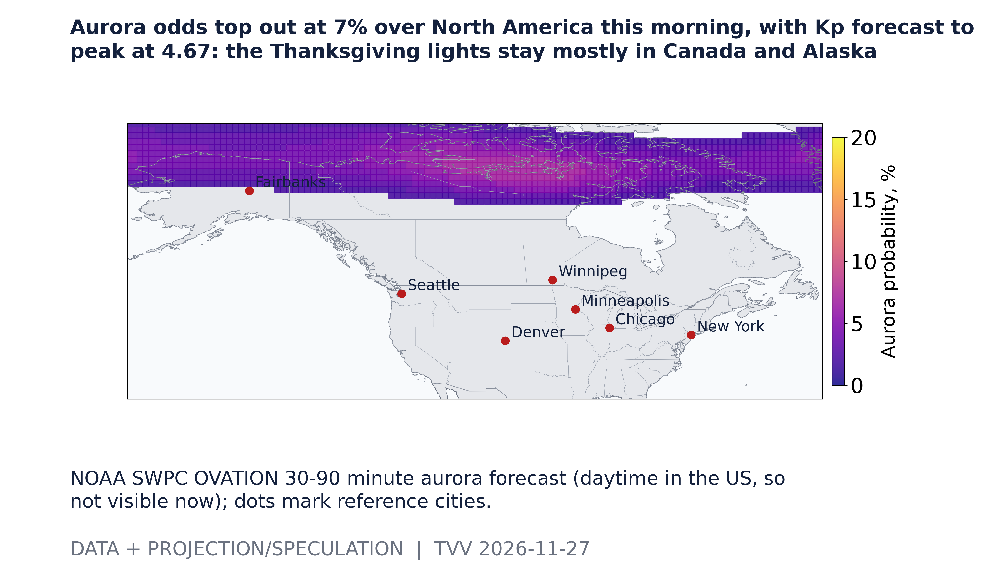
Aurora odds top out at 7% over North America this morning, with Kp forecast to peak at 4.67: the Thanksgiving lights stay mostly in Canada and Alaska. NOAA SWPC OVATION 30-90 minute aurora forecast (daytime in the US, so not visible now); dots mark reference cities. [Data + Projection/Speculation; data as of 2026-11-27 11:37 ET] Source: swpc.noaa.gov data page
5. Critical Infrastructure / Transportation Disruptions
- ★ Nor'easter outages linger on Black Friday: more than 128,000 New Jersey customers were still without power Friday after the Thanksgiving storm (NJ.com), with thousands more out in Connecticut and Maryland (CT Insider, WBAL); Newsweek says some states warn fixes could take days. A power outage forced the Jersey Shore Premium Outlets to close on Black Friday (News12), and thousands remain without power in the St. Louis region (FOX 2). NJ.com · CT Insider · WBAL · Newsweek · News12 · FOX 2
- ★ IT outages pile up: Allstate's outage entered a third day, leaving customers locked out (Gizmodo), as commentators ask whether outages are the new normal (Inquirer). The AI build-out strains balance sheets too: the big five now spend 95% of operating cash flow on capex, up from 55% in late 2022, and Oracle spends 161%, borrowing the rest (SEC filings, see graph); near term, the trend line points higher, labeled as a projection. Gizmodo · Inquirer
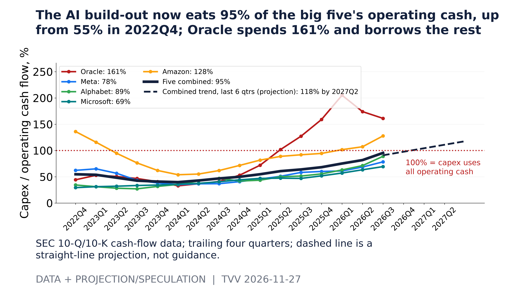
The AI build-out now eats 95% of the big five's operating cash, up from 55% in 2022Q4; Oracle spends 161% and borrows the rest. SEC 10-Q/10-K cash-flow data; trailing four quarters; dashed line is a straight-line projection, not guidance. [Data + Projection/Speculation; data as of 2026Q3] Source: sec.gov data page
6. Econo-Metrics
- ★ Rate hikes go global: ECB's Joachim Nagel signaled the need for another hike in December (Bloomberg), after hawkish ECB minutes (MarketPulse); Tokyo inflation ran hot while the yen sits near 159.6 per dollar (FXStreet, Yahoo Finance); and India's swaps point to an outsized RBI hike next week (Reuters). Anadolu says the Middle East energy shock is pushing central banks back into a hiking cycle. US 10-year yields rose to about 4.91%, snapping an eight-day bond rally (Investing.com, CNBC). German unemployment rose more than expected in November (AOL). Bloomberg · MarketPulse · FXStreet · Reuters · Anadolu · Investing.com · CNBC · AOL
- ★ Holiday spending under strain: the NRF projects a $1.013 trillion holiday season (Lexington Herald Leader), and Adobe expects Black Friday online sales up 9.2% to $12.9 billion, but shoppers are putting necessities in carts as inflation bites (ABC7, Charlotte Observer). With CPI inflation at 4.1%, NRF's 4.2% forecast implies real growth close to zero (Census, see graph). Near term, the Dec 4 jobs report: bettors' most likely November gain is 75k to 100k (28%), with 40% on a 4.1% jobless rate (Polymarket, Kalshi, see graph). Lexington Herald Leader · ABC7 Los Angeles · Charlotte Observer · Kalshi
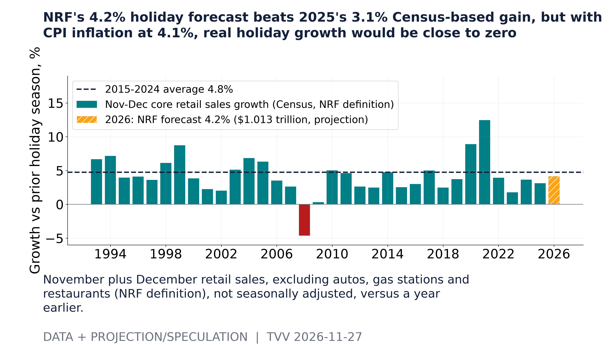
NRF's 4.2% holiday forecast beats 2025's 3.1% Census-based gain, but with CPI inflation at 4.1%, real holiday growth would be close to zero. November plus December retail sales, excluding autos, gas stations and restaurants (NRF definition), not seasonally adjusted, versus a year earlier. [Data + Projection/Speculation; data as of 2026-09-01] Source: nrf.com data page
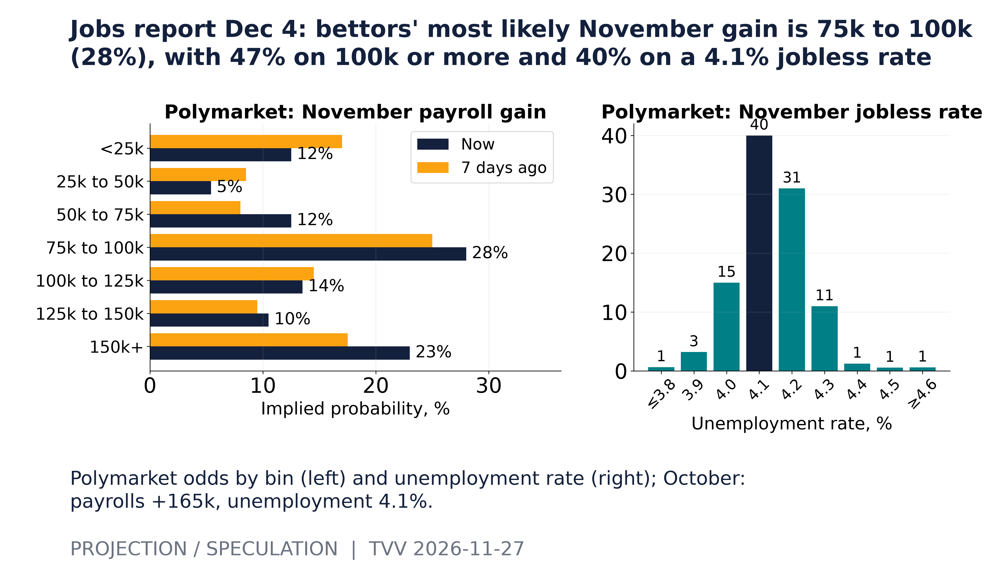
Jobs report Dec 4: bettors' most likely November gain is 75k to 100k (28%), with 47% on 100k or more and 40% on a 4.1% jobless rate. Polymarket odds by bin (left) and unemployment rate (right); October: payrolls +165k, unemployment 4.1%. [Projection/Speculation; data as of 2026-11-27 10:36 ET] Source: polymarket.com data page
7. Epidemic / Bio-Metrics
- ★ Ebola toll may be far higher: DW reports DR Congo's Ebola death toll may be far higher than official counts, Congo is restricting funerals to curb transmission (Anadolu), and WHO issued updated response recommendations calling for better security and faster research (WHO). Cases passed 12,000 this week (Al Jazeera); near term, at the recent 14-day pace of about 65 a day the outbreak would reach about 14,400 cases by Dec 31, a projection (see graph). Polymarket gives a US case in 2026 4.5%. DW · Anadolu · WHO · Al Jazeera · Polymarket
- ★ Measles and bird flu: Ohio's new measles cases this week nearly match its whole 2025 total (Columbus Dispatch), and Pennsylvania races to contain its outbreak as Amish wedding season draws crowds (WSJ). H5N1 activity keeps rising across North America (CIDRAP); the celebrity eagle Jackie died of bird flu (Los Angeles Times), and Mexico's León Zoo closed after bird flu spread to mammals (Mexico News Daily). The Columbus Dispatch · WSJ · CIDRAP · Los Angeles Times · Mexico News Daily
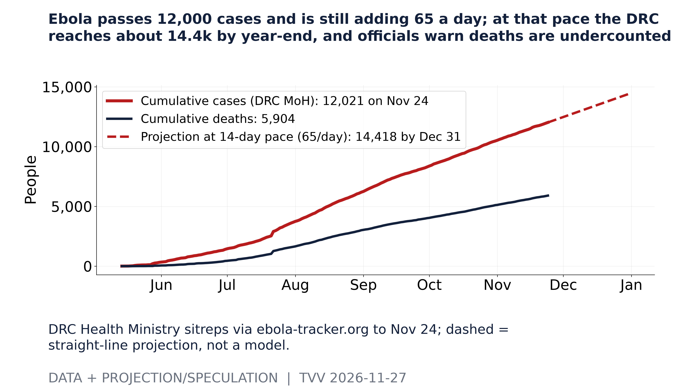
Ebola passes 12,000 cases and is still adding 65 a day; at that pace the DRC reaches about 14.4k by year-end, and officials warn deaths are undercounted. DRC Health Ministry sitreps via ebola-tracker.org to Nov 24; dashed = straight-line projection, not a model. [Data + Projection/Speculation; data as of 2026-11-24] Source: ebola-tracker.org data page
8. Gold and Silver and Commodities
- ★ Metals rebound hard: silver jumped about 7.8% to $43.69 and gold about 2.4% to $3,651.70 by 11:07 AM ET versus Wednesday's settle, as the dollar rally stalled (COMEX via Yahoo Finance, Reuters). Since Wednesday, silver's move ranks among the biggest gains since 2000, yet it remains about 62% below its 2026 high (see graph). Copper rebounded about 3.3% to $5.60 from an 11-month low as risk appetite returned (Bloomberg). Commentary: a one-day squeeze in thin holiday trade is not yet a trend; bettors give 23% to a $46 silver high by Monday (Polymarket, see graph). Yahoo Finance · Yahoo Finance · Reuters · Bloomberg
- ★ Oil and OPEC: OPEC+ is set to keep output targets steady, sources tell Reuters, while Reuters also reports the US pushed Iraq and Venezuela to consider quitting OPEC; Russia's Novak says he has not heard that (Breakingthenews). Banks are raising oil forecasts on prolonged Gulf disruptions (EnergyNow), and oil is on track to snap a three-week losing streak (Reuters). WTI traded near $83.48 and Brent near $90.71, while US natural gas fell about 4.3% to $3.50 on mild weather as the front month rolled to January (Yahoo Finance, WSJ, FXEmpire). Commentary: the US pressure on OPEC membership is a longer-run supply wildcard to watch. Reuters · OilPrice · Breakingthenews · EnergyNow · Reuters · Yahoo Finance · WSJ · FXEmpire
- ★ Softs: coffee futures rose about 2.4% to 276.55 cents (Yahoo Finance) as buyers returned above support (Traders Union), Nestlé will boost Mexican coffee purchases amid grower protests (Yahoo Finance), and Valentine's Day shoppers face soaring chocolate prices (ABC News). Commentary: food-commodity inflation keeps feeding household budget pressure into the holidays. Yahoo Finance · Traders Union · Yahoo Finance · ABC News
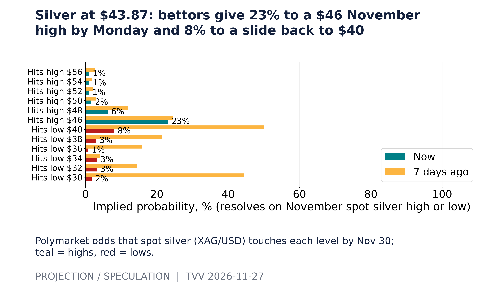
Silver at $43.87: bettors give 23% to a $46 November high by Monday and 8% to a slide back to $40. Polymarket odds that spot silver (XAG/USD) touches each level by Nov 30; teal = highs, red = lows. [Projection/Speculation; data as of 2026-11-27 10:36 ET] Source: polymarket.com data page
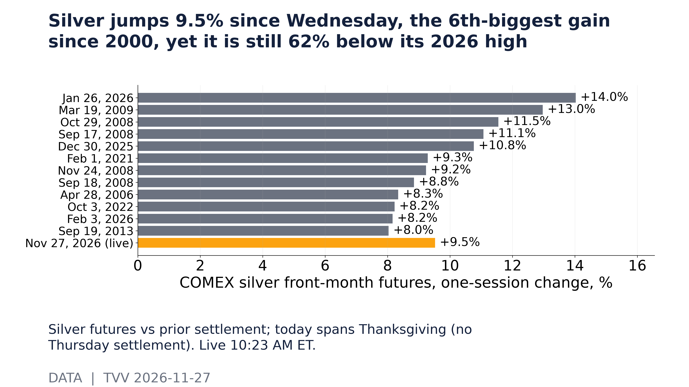
Silver jumps 9.5% since Wednesday, the 6th-biggest gain since 2000, yet it is still 62% below its 2026 high. Silver futures vs prior settlement; today spans Thanksgiving (no Thursday settlement). Live 10:23 AM ET. [Data; data as of 2026-11-27 live] Source: finance.yahoo.com data page
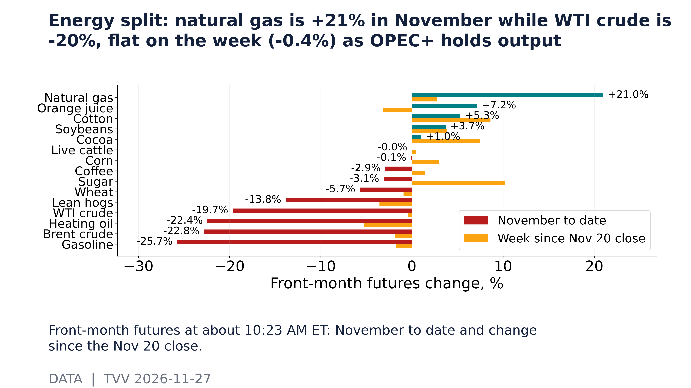
Energy split: natural gas is +21% in November while WTI crude is -20%, flat on the week (-0.4%) as OPEC+ holds output. Front-month futures at about 10:23 AM ET: November to date and change since the Nov 20 close. [Data; data as of 2026-11-27 10:36 ET] Source: finance.yahoo.com data page
9. Stock Averages and Nasdaq Major Movers
- ★ Green Friday rebound: by 11:07 AM ET in the half-day session (closing 1 PM ET), the S&P 500 was up 1.2% at 7,271, the Nasdaq up 1.7% at 23,988, the Dow up 1.0% at 50,689 and the Russell 2000 up 1.2%, while the VIX eased to 25.6 (Yahoo Finance). Reuters says battered AI shares are clawing back losses. Even so, November is on track to be the worst since 2008 (see graph), and the S&P 500 sits about 8% off its record (Opening Bell Daily). Yahoo Finance · Reuters · Opening Bell Daily
- ★ Week's leaders and laggards: Tesla rose about 4.9% and Palantir about 4.6% Friday morning, while Nvidia slipped about 0.7%; MarketWatch notes Nvidia has tumbled 28% in one chaotic month with its next test in the week ahead. Bitcoin, near $59,900, is on course to end a seven-week losing streak (CoinDesk), though Galaxy withdrew its call that the bear market ended in June (Bitcoin Magazine). Yahoo Finance · Yahoo Finance · MarketWatch · CoinDesk · Bitcoin Magazine
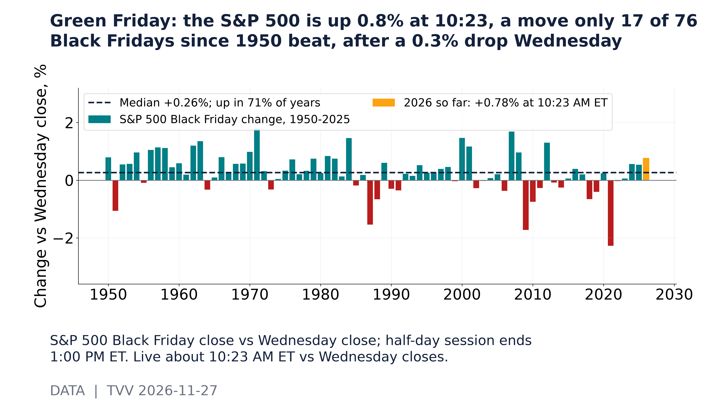
Green Friday: the S&P 500 is up 0.8% at 10:23, a move only 17 of 76 Black Fridays since 1950 beat, after a 0.3% drop Wednesday. S&P 500 Black Friday close vs Wednesday close; half-day session ends 1:00 PM ET. Live about 10:23 AM ET vs Wednesday closes. [Data; data as of 2026-11-27 10:23 ET] Source: finance.yahoo.com data page
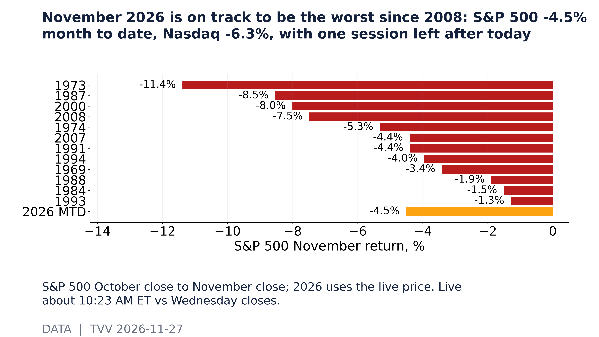
November 2026 is on track to be the worst since 2008: S&P 500 -4.5% month to date, Nasdaq -6.3%, with one session left after today. S&P 500 October close to November close; 2026 uses the live price. Live about 10:23 AM ET vs Wednesday closes. [Data; data as of 2026-11-27 10:23 ET] Source: finance.yahoo.com data page
10. Polymarket and Kalshi Sentiment Highlights
- ★ What bettors price: Polymarket gives 94.5% to a 25 bp Fed hike on Dec 9, 18% to an "AI bubble burst" by Dec 31 (39% by November 27, 2026), 14% to the US announcing an end to the Iran blockade by Dec 31, and 0.25% to Hormuz traffic returning to normal by Nov 30. Near term, crash insurance is cheapening: odds the S&P 500 touches 6,200 by Dec 31 fell to 14% from 20% a week ago, while 8,000 gets 6% (see graph). Polymarket · Polymarket · Polymarket
- ★ Prediction markets under pressure: Kalshi is pushing "microinsurance" for small businesses as state crackdowns bite on sports contracts (Financial Times, CoinDesk), and ABC News reports the industry is racing to curb insider trading, with one insider saying "survival is at stake." Financial Times · CoinDesk · ABC News
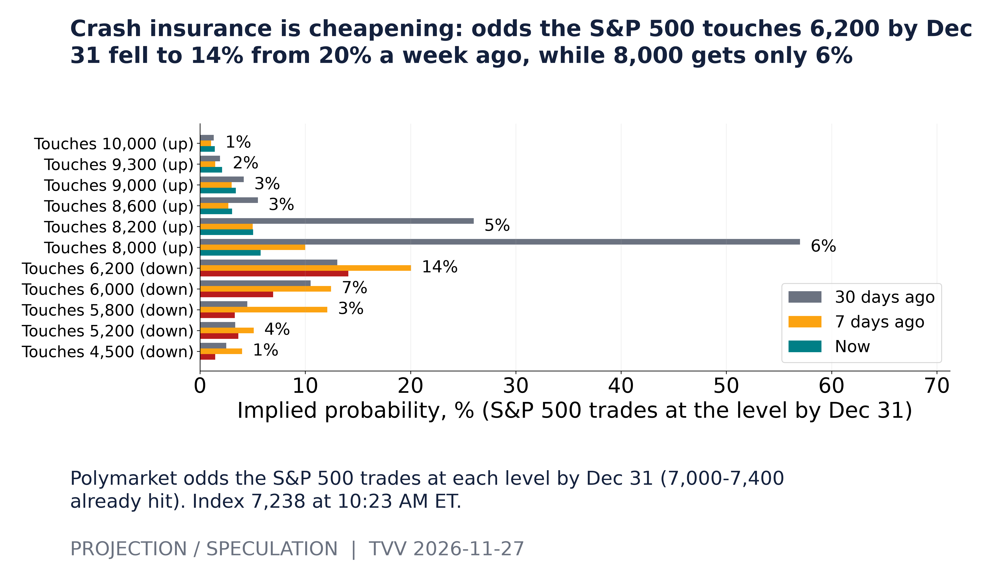
Crash insurance is cheapening: odds the S&P 500 touches 6,200 by Dec 31 fell to 14% from 20% a week ago, while 8,000 gets only 6%. Polymarket odds the S&P 500 trades at each level by Dec 31 (7,000-7,400 already hit). Index 7,238 at 10:23 AM ET. [Projection/Speculation; data as of 2026-11-27 10:36 ET] Source: polymarket.com data page
11. Tech-Metrics
- ★ Blackwell chips found in Shanghai: Bloomberg traced a GB300 NVL72 rack, among Nvidia's most powerful products, by serial number to a Shanghai data center linked to Alice Huang, where it was pledged as collateral for a 96 million yuan ($14 million) loan; Blackwell exports to China need a US license and how the rack got there is unknown. Megaspeed denies wrongdoing (Bloomberg, Quartz). President Trump said he was "a little concerned" by the selloff but insists Huang poses no security risk (Forbes), and the WSJ asks whether Nvidia is becoming a government-sponsored enterprise. Huang faces House questioning (Scripps News). Bloomberg · Quartz · Forbes · WSJ · Scripps News
- ★ Palantir and Tesla deals: Poland signed a $300 million, five-year contract with Palantir for a military AI system (Reuters, Bloomberg), and Tesla plans to acquire German manufacturing systems group EMAG (Reuters) ahead of a Dec 15 EU vote on its assisted-driving tech (Benzinga). Near term, bettors give 16% to Palantir hitting $180 and 42% to Tesla hitting $405 by Monday (Polymarket, see graph). Software stocks bounced, but Intuit is still 58% and ServiceNow 42% below their 2026 highs (see graph). Reuters · Bloomberg · Reuters · Benzinga
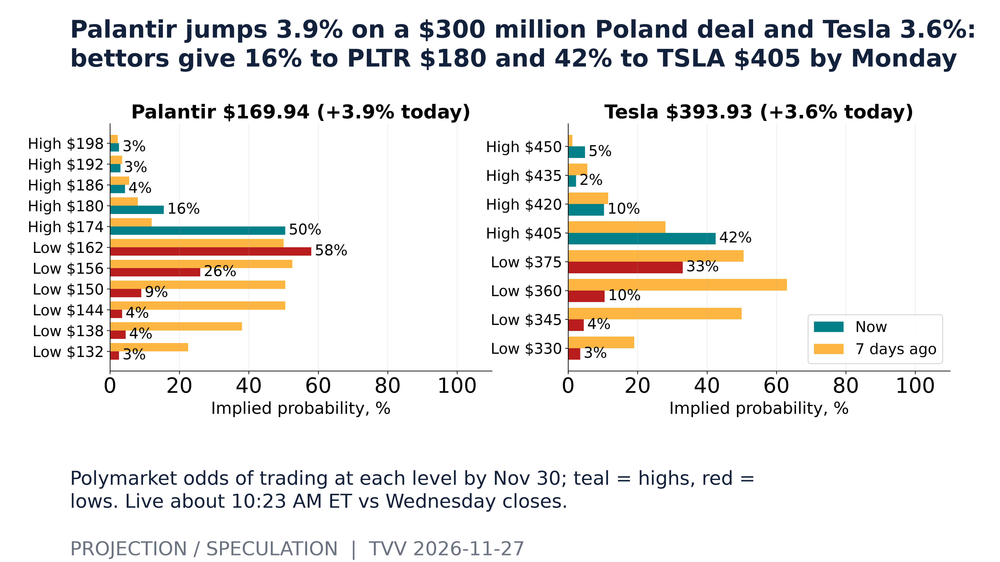
Palantir jumps 3.9% on a $300 million Poland deal and Tesla 3.6%: bettors give 16% to PLTR $180 and 42% to TSLA $405 by Monday. Polymarket odds of trading at each level by Nov 30; teal = highs, red = lows. Live about 10:23 AM ET vs Wednesday closes. [Projection/Speculation; data as of 2026-11-27 10:36 ET] Source: polymarket.com data page
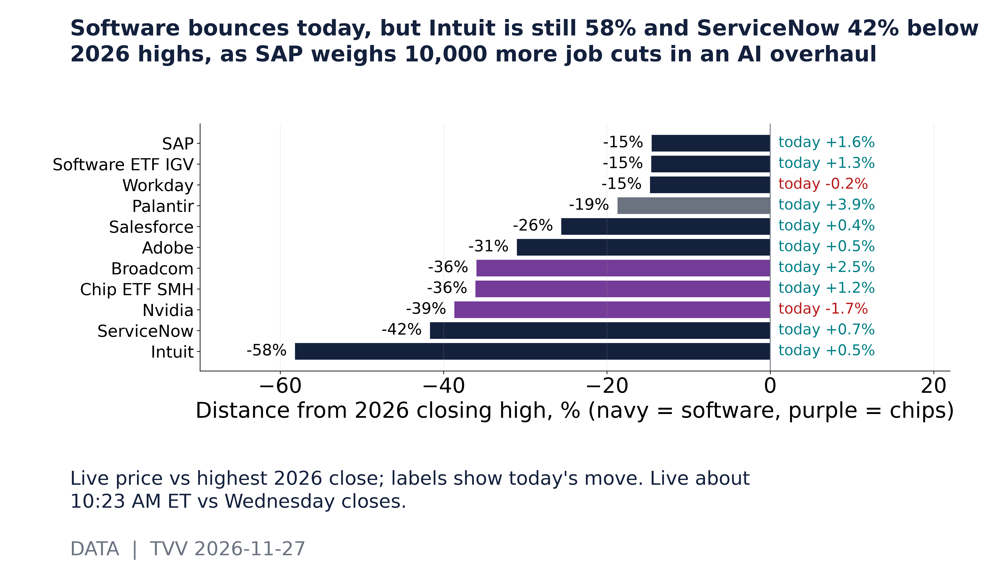
Software bounces today, but Intuit is still 58% and ServiceNow 42% below 2026 highs, as SAP weighs 10,000 more job cuts in an AI overhaul. Live price vs highest 2026 close; labels show today's move. Live about 10:23 AM ET vs Wednesday closes. [Data; data as of 2026-11-27 10:23 ET] Source: finance.yahoo.com data page
12. AI Hypergrowth Risks
- ★ AI and jobs: SAP is weighing cutting at least 10,000 positions in an AI-driven restructuring, its second overhaul of that size in two years (Bloomberg, CNBC, CIO); MarketWatch calls it the latest in a brutal year for tech layoffs. An Anthropic team lead says AI is changing what is weighed in promotions (Business Insider). Bloomberg · CNBC · CIO · MarketWatch · Business Insider
- ★ AI successes and their limits: Anthropic says Claude solved two enduring mysteries about black holes (Mashable), and a Stanford physicist's AI-assisted theory has scientists at odds (Business Insider). OpenAI's GPT-6.2 correction gives users less AI for the same fee (InfoWorld), OpenAI's chief scientist wants AI labs to adopt a shared mathematical "speed limit" (Latin Times), and California sued OpenAI as a "public nuisance" (Mashable). K33 says AI math breakthroughs revive Bitcoin security fears though the practical threat is unproven (The Block). Mashable · Business Insider · InfoWorld · Latin Times · Mashable · The Block
- ★ AI shopping goes mainstream: Adobe expects AI-referred visits to US retail sites to jump 95% this Black Friday (Inc.), and shoppers are leaning on the "Sparky" shopping assistant (Newser). Near term, Adobe's forecast puts Black Friday online sales up 9.2% to $12.9 billion (see graph). Inc. · Newser
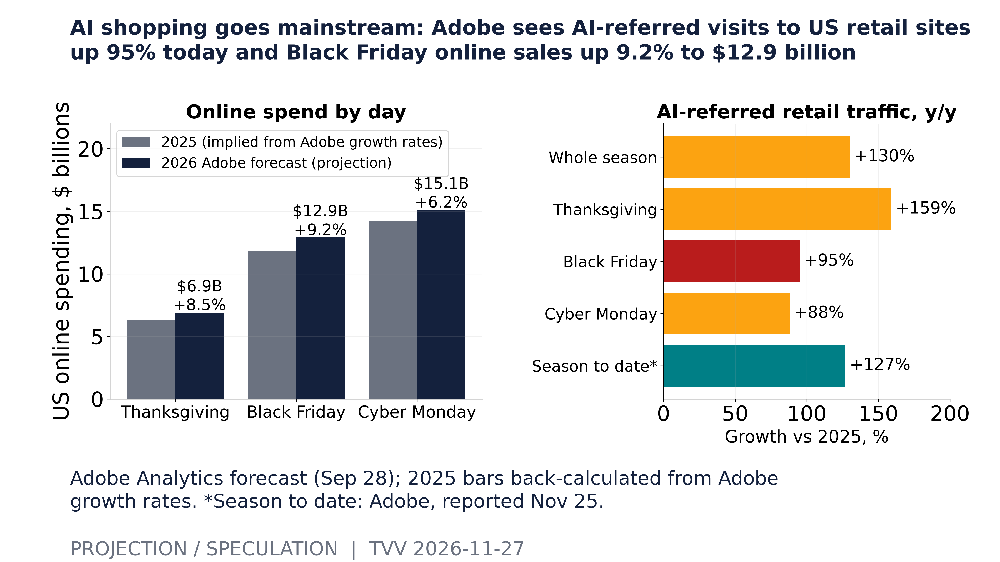
AI shopping goes mainstream: Adobe sees AI-referred visits to US retail sites up 95% today and Black Friday online sales up 9.2% to $12.9 billion. Adobe Analytics forecast (Sep 28); 2025 bars back-calculated from Adobe growth rates. *Season to date: Adobe, reported Nov 25. [Projection/Speculation; data as of 2026-11-25] Source: news.adobe.com data page
13. Finance Bubble Derivatives Risk
- ★ AI debt alarm: Michael Burry flagged a report warning that AI data-center debt is mispriced like 2007 subprime (Quartz, BeInCrypto). US chip curbs on Chinese tenants have halted billions in data-center deals, and Asian lenders slowed $7.8 billion of loans (Bloomberg, Tech Times). CoreWeave notes fell to about 74 cents (FourWeekMBA). Near term, Polymarket bettors give CoreWeave 38%, Nscale 26% and Applied Digital 26% odds of defaulting before 2028 (see graph), and put credit downgrades before 2028 at 59.5% for Nvidia and 48% for CoreWeave. Quartz · Bloomberg · Tech Times · FourWeekMBA · Polymarket
- ★ Leverage unwinds: a triple-leveraged semiconductor ETF plunged 23% in a single day with implied volatility above 200% (Futu), and EBC Financial says leveraged ETFs and margin debt amplified South Korea's 39% selloff. SOXL returned -19% this year versus +79% for three times its index, a 98-point volatility tax from daily resets (see graph). Private markets are easier to enter than to exit (CNBC), and the FT examines private credit's "alpha" problem. Futu · EBC Financial · CNBC · Financial Times
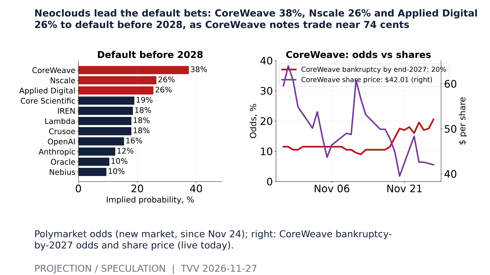
Neoclouds lead the default bets: CoreWeave 38%, Nscale 26% and Applied Digital 26% to default before 2028, as CoreWeave notes trade near 74 cents. Polymarket odds (new market, since Nov 24); right: CoreWeave bankruptcy-by-2027 odds and share price (live today). [Projection/Speculation; data as of 2026-11-27 10:36 ET] Source: polymarket.com data page
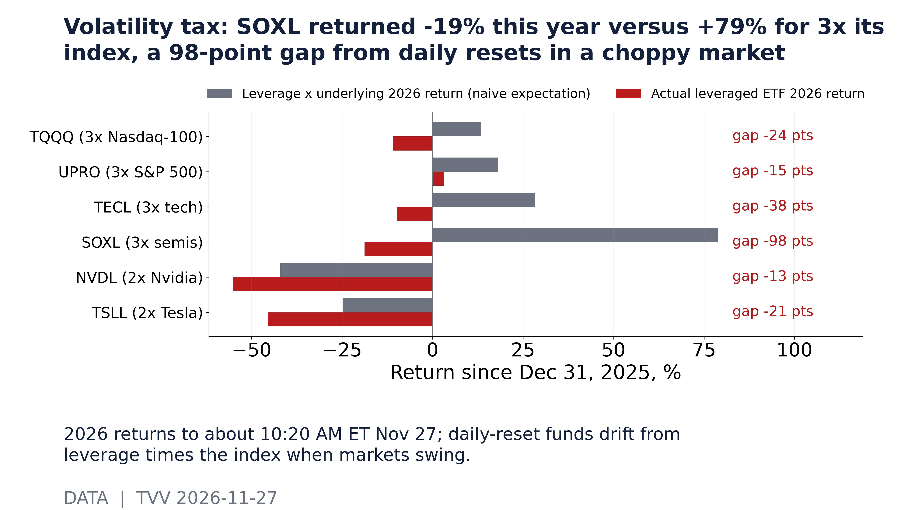
Volatility tax: SOXL returned -19% this year versus +79% for 3x its index, a 98-point gap from daily resets in a choppy market. 2026 returns to about 10:20 AM ET Nov 27; daily-reset funds drift from leverage times the index when markets swing. [Data; data as of 2026-11-27] Source: finance.yahoo.com data page
Prioritized Risk Summary November 27, 2026
| Sections Ranked for Importance Today | |
|---|---|
| GEOPOLITICS | Kuwait drone deaths draw Europe in; Trump adds a carrier and names an Iran target |
| TERROR | AI agents breach Swiss infrastructure operators; SAP source code hacked |
| PREDICTIONS | Bettors price 94.5% for a Dec 9 Fed hike and 18% for an AI bubble burst by year-end |
| DERIVATIVES | Burry flags AI data-center debt as mispriced; bettors see CoreWeave default at 38% |
| TECHNOLOGY | Nvidia Blackwell rack found at Shanghai site tied to Alice Huang |
| HEALTH | Congo's Ebola deaths may be far higher than reported; funerals restricted |
| ECONOMY | ECB, Japan and India lean toward hikes; US 10-year yield back near 4.9% |
| AI BOOST | SAP weighs 10,000 more AI job cuts; Claude cracks black hole puzzles |
| STOCKS | Green Friday rally lifts Nasdaq 1.7%, but November is the worst since 2008 |
| COMMODITY | Silver jumps 7.8% and gold 2.4%; OPEC+ set to hold output steady |
| INFRASTRUCT | Over 128,000 in New Jersey still without power after the nor'easter |
| SPACE | Kp peaks below storm level; Thanksgiving auroras stay mostly in Canada |
| QUAKES | No new damaging M6+ quake; this week's M6.5 Vanuatu caused no reported harm |
TECHVESTVENTURES ACTION-ALERT — November 27, 2026 see all graphs click TVV Risk Center
EDITOR — Michael Hentschel
Most news events require or spawn no action or reaction, some (but not many) are or become warnings. We draw attention to substantial lifestyle risks and market risks in particular, some created by Mid-Term Vote anxieties, Middle East tensions, vast over-indebtedness globally, and other events we track. Longer term but capable of causing sudden power surges as serious as the Carrington Event. Climate instability occasioned by long-term cyclical solar electro-magnetic flares, is becoming much more prominent and even more likely. New AI predictive analytics and pattern seekers are pointed in some of these directions, and we monitor imminent likelihood. Some readers might hedge and others might see opportunity. The above is not investment advice.